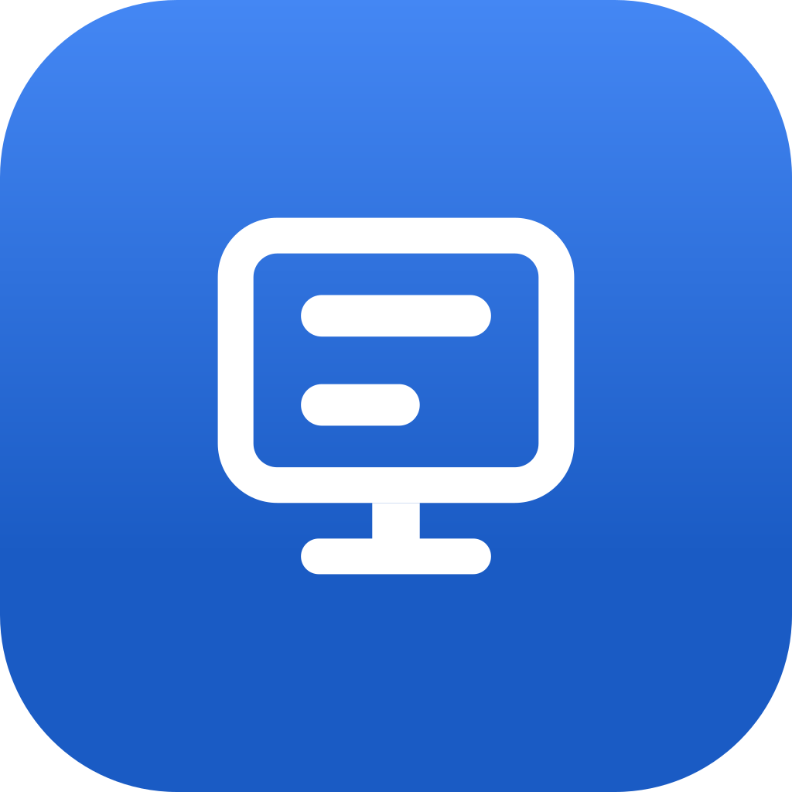
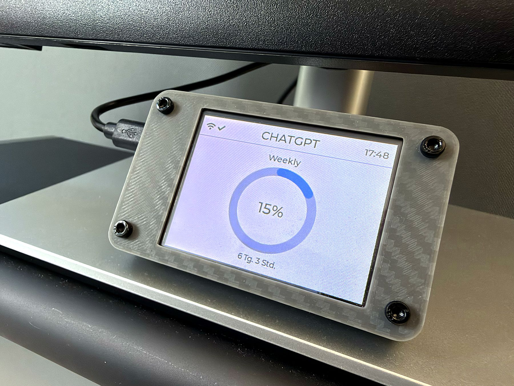
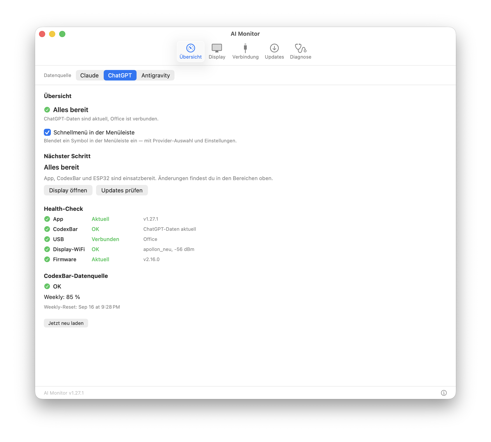
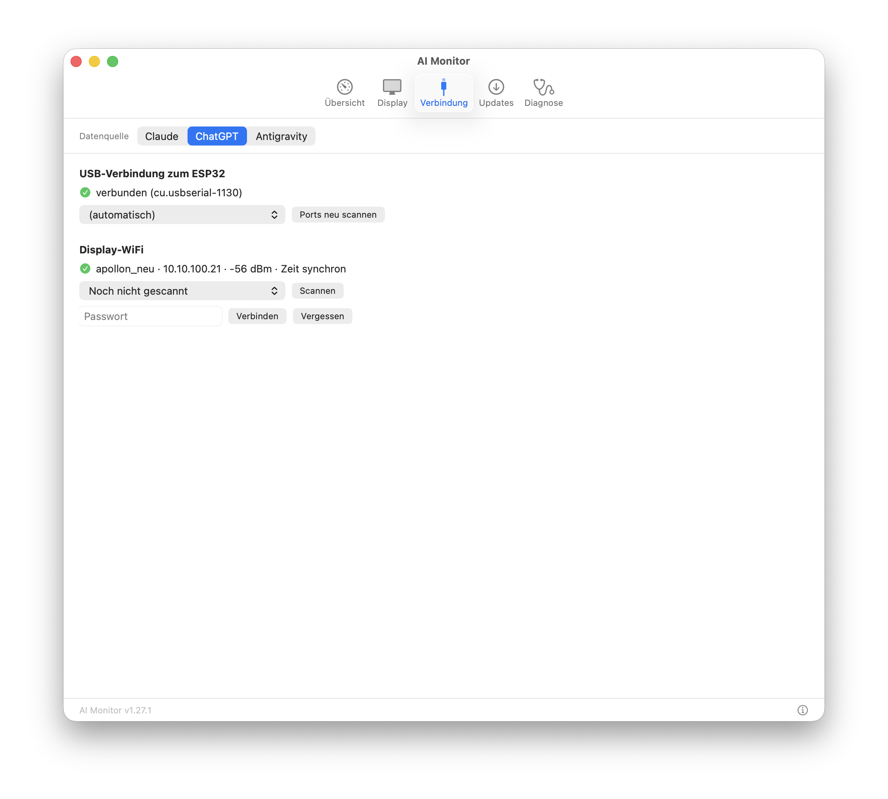
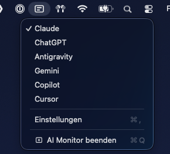
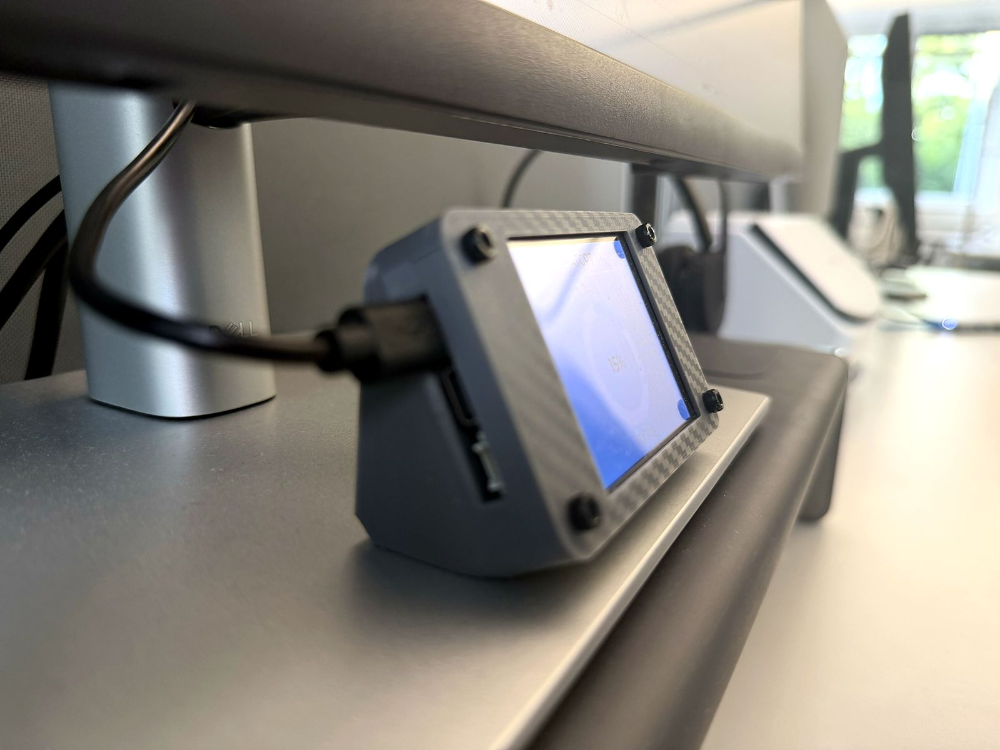
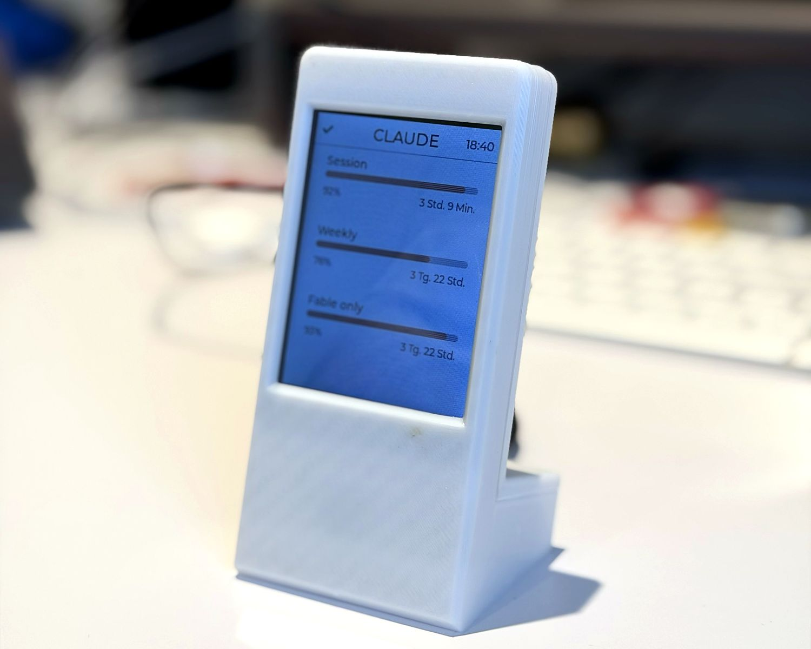
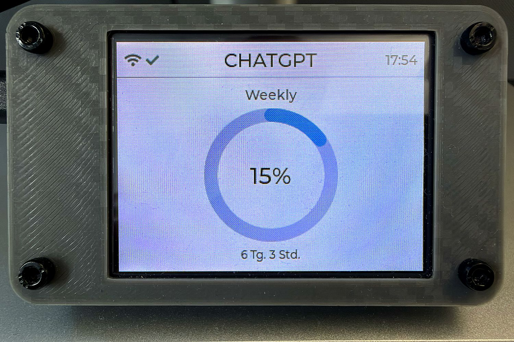
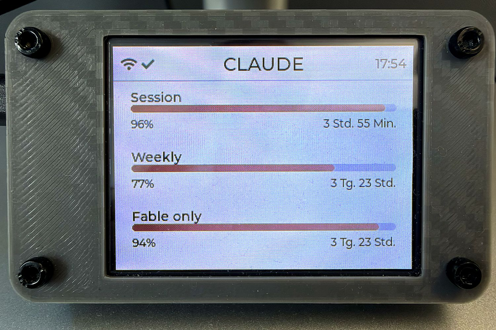

01 / Die Datenquelle
CodexBar
Ruft die Nutzungslimits deiner eingerichteten KI-Dienste ab und stellt sie lokal auf deinem Mac bereit.

AI MonitorKleines Display. Freier Kopf.
Wie viel ist noch drin? AI Monitor zeigt dir deine Nutzungslimits für Claude, ChatGPT, Gemini, Copilot, Cursor und Antigravity – auf einem kleinen Display direkt an deinem Arbeitsplatz.
Für macOS 14+, Apple Silicon und Intel. Benötigt CodexBar als Datenquelle.

Ein Display für deine KI-Dienste
Downloads
CodexBar ruft deine Nutzungslimits ab. Die AI Monitor App überträgt sie per USB auf dein Display. Du brauchst beide Apps auf deinem Mac.
Ruft die Nutzungslimits deiner eingerichteten KI-Dienste ab und stellt sie lokal auf deinem Mac bereit.
Verbindet deinen Mac mit dem Display. Hier stellst du die Anzeige ein und installierst die passende Firmware.



Einrichtung
Installiere CodexBar und melde dich dort bei den KI-Diensten an, deren Limits du sehen möchtest.
Lade die Mac App herunter und öffne sie. Hier verwaltest du die Verbindung und die Anzeige.
Verbinde dein ESP32-Display per USB-Datenkabel mit dem Mac. Die App erkennt den Anschluss automatisch.
Wähle in der App die Display-Variante, installiere die Firmware und wähle deinen KI-Dienst aus.
Hardware
Du brauchst ein ESP32-Display aus der CYD-Serie und ein USB-Datenkabel. Ein passendes Gehäuse kannst du dir selbst drucken.

Das Display
ESP32-2432S028 / ESP32-2432S028R
2,8-Zoll-Farbdisplay mit Touchscreen und ESP32. Strom und Daten kommen über ein einziges USB-Kabel.



Gut zu wissen
Wird dein Display nicht erkannt oder fehlen die Daten? Diese Hinweise helfen dir bei den häufigsten Problemen.
Prüfe zuerst, ob dein USB-Kabel auch Daten übertragen kann. Falls weiterhin kein Anschluss angezeigt wird, prüfe den USB-Chip deines Boards und den passenden Treiber: CH340 oder CP2102 von Silicon Labs.
Meist passt die installierte Firmware nicht zur Display-Variante. Wähle in der AI Monitor App die andere Variante (ILI9341 oder ST7789) und übertrage die Firmware erneut.
Prüfe, ob CodexBar für den gewünschten KI-Dienst aktuelle Daten liefert und die lokale CLI verfügbar ist. Wähle anschließend in AI Monitor den gewünschten KI-Dienst als Datenquelle aus.
Ja. Die Firmware für beide Display-Varianten findest du unter v2.16.0 auf GitHub. Am einfachsten installierst du sie direkt über die Mac App.